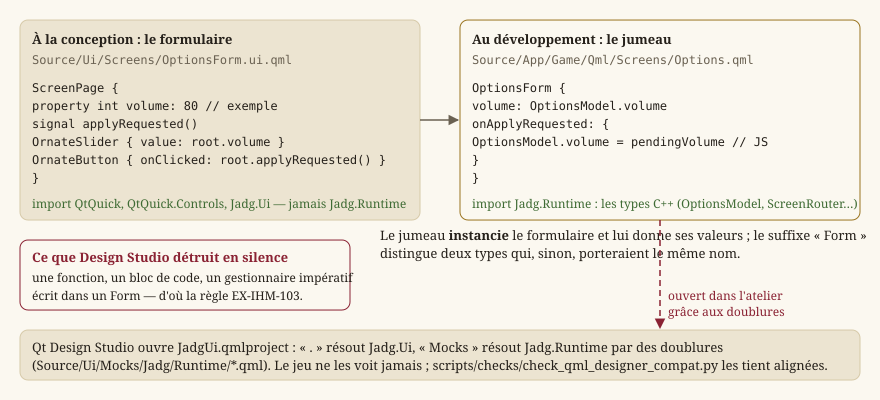

Concevoir les écrans dans Qt Design Studio
Statut : en place (
LOT-86, module de conception refondu auLOT-87). Cette page ne s'adresse pas au développeur mais à qui dessine les écrans. Elle décrit ce qu'on peut faire sans jamais ouvrir un fichier source, ce qui demande encore un développeur, et pourquoi la frontière est là.
En une phrase
Ouvrir Source/Ui/JadgUi.qmlproject dans Qt Design Studio, modifier, enregistrer, relancer le jeu : le changement est à l'écran, sans qu'aucun compilateur n'ait tourné (EX-IHM-100).
Ce que le projet vous montre, et ce qu'il vous cache
JadgUi.qmlproject ne décrit que Source/Ui, les jumeaux de câblage et les assets. Ni CMake, ni Source/HMI, ni une ligne de C++ n'y apparaissent — ce n'est pas une commodité d'affichage, c'est le périmètre du fichier. La frontière entre les deux métiers n'est donc pas une consigne de relecture : c'est ce que le projet vous laisse voir.
Source/Ui/ le module Jadg.Ui : du QML, et rien d'autre. À vous.
Theme/Tokens.qml LES JETONS : couleurs, polices, grandeurs.
Controls/ les briques réutilisées d'un écran à l'autre.
Screens/ un FORMULAIRE *Form.ui.qml par écran.
DesignStudio/Main.ui.qml la galerie : ce que l'atelier ouvre en premier.
Mocks/ les DOUBLURES des types C++, pour l'atelier seulement.
Source/App/Game/Qml/ le module Jadg.App : le câblage — développeur.
Main.qml la fenêtre.
Logic/ la pile d'écrans, le sélecteur de développement.
Screens/ le JUMEAU <Écran>.qml de chaque formulaire.
Source/HMI/Runtime/ le module Jadg.Runtime : les types C++ que les jumeaux voient.Pourquoi trois modules, et pourquoi Source/Ui n'a pas une ligne de C++. Qt Design Studio dessine avec son propre Qt (6.8.7, embarqué dans l'atelier) et un marionnettiste — qmlpuppet — qui ne charge aucun plugin C++ du projet. Un module qui mêle formulaires et types C++ est donc résolvable par le jeu et pas par l'atelier. Jadg.Ui est du QML pur, et le reste tel quel ; les types C++ vivent dans Jadg.Runtime, que seuls les jumeaux importent.
La règle des deux fichiers
Chaque écran existe en deux exemplaires, dans deux dossiers, et il faut savoir lequel est le vôtre :
| Fichier | À qui | Ce qu'il contient |
|---|---|---|
Source/Ui/Screens/CharacterSheetForm.ui.qml | la conception | tout ce qui se voit : disposition, couleurs, tailles, animations |
Source/App/Game/Qml/Screens/CharacterSheet.qml | le développement | d'où viennent les données, et ce que font les touches |
Le suffixe Form n'est pas décoratif : sans lui, les deux fichiers déclareraient un type du même nom et le module refuserait de se charger.
{kind=link}

Lue de gauche à droite, la figure dit la division du travail : le formulaire déclare ce qu'il sait afficher — une valeur, un signal émis quand on clique — et le jumeau répond à ces déclarations en les reliant aux types C++. Le formulaire ne sait pas d'où vient le volume ; le jumeau ne sait pas à quoi ressemble un curseur.
Pourquoi cette séparation. Un .ui.qml est le sous-ensemble déclaratif de QML — celui que Design Studio sait relire et réenregistrer sans l'abîmer. Ce qu'il n'y comprend pas, il le perd, sans avertir. La règle ne vise donc pas le style, mais ce que l'outil détruirait : n'écrivez jamais de fonction, de bloc de code ni de gestionnaire impératif dans un Form. Si vous avez besoin de logique, c'est le jumeau qu'il faut, et donc un développeur.
scripts/check_ui_layers.py le vérifie à chaque Pull Request (EX-IHM-103).
Les jetons : le seul endroit où s'écrit une couleur
Source/Ui/Theme/Tokens.qml porte la palette, les polices et les grandeurs. Aucune couleur, aucune famille de police, aucune taille de texte ne s'écrit ailleurs (EX-IHM-105, vérifié par le même contrôle).
Ce n'est pas de la discipline pour la discipline. Une valeur écrite dans un écran survit à un changement de palette : elle ne suit plus rien, et personne ne remarque qu'un seul écran a cessé de ressembler aux autres. Le dépôt a déjà payé ce prix — la palette y a vécu écrite deux fois pendant des mois.
Les couleurs y sont nommées par rôle (accent, surface, frameEdge), jamais par teinte. Un jeton accent survit à un changement de couleur ; un jeton qui s'appellerait or deviendrait un mensonge le jour où l'accent passe au bleu.
Le facteur d'agrandissement
Deux facteurs coexistent pendant la charte v2 (LOT-87), et les grandeurs sont déjà multipliées par le leur : ne multipliez jamais vous-même.
- Charte v2 —
Tokens.uiScale, un réel : la fenêtre rapportée à 1920 × 1080. Design Studio dessine à 1080p, où il vaut 1. L'échelle typographique estfontDisplay(58),fontScreenTitle(36),fontSectionTitle(24),fontBody(18) etfontCaption(14) : écrirefont.pixelSize: Tokens.fontBodysuffit. Titres enTokens.titleFamily(Cinzel), corps enTokens.bodyFamily, citations enTokens.loreFamilyavecfont.italic: true. - Charte v1, obsolète —
Tokens.scale, un entier borné à 1–3, etscreenTitle,body,spaceMedium… Entier, parce que les filets d'un pixel du cadre de parchemin se corrompent silencieusement à une échelle fractionnaire. Un écran transcrit en v2 ne les emploie plus ; ils disparaissent au T5.2 du lot.
Les données d'exemple
Chaque formulaire porte des valeurs d'exemple — c'est ce qui vous permet de juger une mise en page au lieu de regarder un écran vide. Le jeu ne les voit jamais : à l'exécution, le jumeau les remplace.
Vous pouvez aussi ouvrir le jumeau dans l'atelier, pour voir l'écran avec les valeurs que le jeu lui donne. Les types C++ qu'il nomme (OptionsModel, ScreenRouter, PendingData, CharacterSheetModel, InventoryModel, GameViewport) y sont remplacés par des doublures QML de Source/Ui/Mocks/, aux mêmes noms et mêmes propriétés. Ce n'est pas là qu'on dessine — le jumeau contient du code, que l'atelier n'ouvre qu'en texte pour l'éditer — mais c'est là qu'on vérifie qu'un formulaire tient avec de vraies longueurs de texte.
Elles doivent avoir exactement la forme des vraies données. Les listes d'exemple sont des ListModel et non des tableaux JavaScript, parce qu'un tableau n'expose que modelData là où un modèle expose ses rôles — un écran validé sur des tableaux se serait affiché vide une fois branché, sans la moindre erreur.
Les écrans dessinés mais pas encore alimentés
Sept écrans du RPG existent sans données : les lots qui les produiront ne sont pas écrits. La page Options, elle, ne l'est plus — ses réglages atteignent le moteur pour de bon. Leur pied l'avoue — « Écran dessiné, données à brancher » — et leurs champs affichent un tiret cadratin plutôt que de fausses valeurs. Un écran rempli de valeurs plausibles se prend pour un écran fini : il passe les relectures, on l'oublie, et un jour quelqu'un s'étonne que le marchand vende toujours les mêmes trois objets.
Vous pouvez les dessiner entièrement dès maintenant : le jour où le lot fonctionnel arrive, seul le jumeau change. python scripts/list_pending_bindings.py en donne l'inventaire.
Les contrôles Qt prennent la couleur des jetons
Switch, Slider, ComboBox, Button — ceux de QtQuick.Controls — ne se peignent pas eux-mêmes : ils suivent la palette de leur fenêtre, que Main.qml dérive de Tokens.qml. Changer Tokens.accent change donc la couleur d'un interrupteur allumé, sans que personne ne touche à un écran.
Pour que cela soit vrai, le jeu impose le style « Basic ». Sous Windows, Qt choisit sinon « FluentWinUI3 », qui peint avec les couleurs du système et ignore largement la palette : les interrupteurs et le curseur de volume ressortaient en bleu au milieu du parchemin, et aucune retouche des jetons n'y pouvait rien. C'est le genre de dépendance cachée qu'on cherche longtemps — elle est donc écrite une fois, dans Source/App/Game/Main.cpp, et commentée.
Conséquence pour vous : si un contrôle vous paraît de la mauvaise couleur, la réponse est dans Tokens.qml ou dans la palette de Main.qml, jamais dans l'écran.
La bibliothèque de composants
Le panneau Composants de l'atelier liste aujourd'hui chaque dossier du projet « (vide) », avec ou sans le mot designersupported que porte le qmldir engendré (Source/Ui/Jadg/Ui/), et quelle que soit la disposition des fichiers — c'est le constat de la phase 1 du LOT-87, et il reste à instruire. En attendant, une brique se pose de deux façons : en la copiant depuis la galerie DesignStudio/Main.ui.qml, qui les montre toutes, ou en l'écrivant dans l'onglet Code (Cabochon { }), après quoi la vue 2D la dessine et le panneau Propriétés l'édite. Si un type ne se résout pas du tout, le projet n'a pas été configuré : lancer scripts/build.ps1 une fois suffit.
Les modules que vous pouvez importer
Uniquement ceux que connaissent à la fois Qt et Design Studio : QtQuick, QtQuick.Controls, QtQuick.Layouts, QtQuick.Shapes, QtQuick.Effects, et Jadg.Ui. Jamais Jadg.Runtime : un formulaire qui nommerait un type C++ s'ouvrirait dans le jeu et resterait irrésolu dans l'atelier. scripts/check_qml_designer_compat.py le refuse.
Design Studio livre les siens (QtQuick.Studio.*), absents d'une installation Qt ordinaire : un formulaire qui en importerait s'ouvrirait parfaitement chez vous et casserait le jeu — le pire des deux mondes, découvert le plus tard possible. EX-IHM-104 l'interdit, et le contrôle le vérifie.
Les ornements se tracent, ils ne se collent pas
Charte v1. Au
LOT-87,EX-IHM-075est refondue : les ornements de la charte v2 sont des images 9-patch produites à 1080p depuis le cahier des assets, et posées par les briquesPanelFrame,TitlePlate,OrnateButton… (T2.7). Les trois raisons ci-dessous en deviennent les conditions : marges 9-patch déclarées, palette des jetons imposée à la production, taille fixe pour ce qui ne s'étire pas. Ce qui suit reste vrai des écrans pas encore transcrits.Poser une brique v2. Elles sont toutes dans la galerie (
DesignStudio/Main.ui.qml, ce que l'atelier ouvre en premier ;--screen=Gallerydans le jeu), chacune dans ses états. Une brique se règle par ses propriétés —material,kind,forcedState… — et jamais par une image : elle nomme une clé du cahier et pose la pièce livrée, ou son aplat de jetons tant qu'elle ne l'est pas (Theme/Artwork.qmldit lesquelles le sont). Une maquette qui paraît « plate » dans l'atelier n'est donc pas fausse : elle attend ses images. Ne pas éditerArtwork.qmlà la main, la réception des images l'écrit.
Cadres, cabochons, bandeaux et fleurons sont des Shape — des polygones, pas des images (EX-IHM-075, version v1). Trois raisons :
- une image ne s'étire pas honnêtement : un cabochon posé sur un panneau bas s'ovalise ;
- une image fige ses couleurs hors des jetons, et devrait être réexportée à chaque retouche ;
- une image n'est nette qu'à un seul facteur d'agrandissement ; un tracé l'est aux trois.
Leurs proportions sont relevées sur Character_Sheets_Tanares.pdf, jamais choisies à vue. Les retoucher est votre droit ; savoir qu'elles viennent de là évite de croire qu'elles sont arbitraires.
Les textes
Écrivez-les en français, directement dans le fichier : qsTr("Nouvelle partie"). Le français est la langue source — c'est ce qui vous permet de juger une mise en page, une clé technique ne se lisant pas.
Les traductions se maintiennent ensuite dans Qt Linguist, sur Source/Elements/Localization/jadg_en.ts. Un outil de traducteur, pas de développeur.
Une exception : le vocabulaire des règles — noms de caractéristiques, d'emplacements d'équipement. Ceux-là viennent d'un lexique (rpg.glossary.csv) qui garantit une seule traduction par terme dans tout le jeu, et les écrire dans un écran casserait cette garantie.
Ce qui demande encore un développeur
Aucune chaîne ne met la totalité d'une interface entre vos mains, et le prétendre ne servirait personne :
| Vous, seul | Un développeur |
|---|---|
| disposition, tailles, marges, ancrages | exposer une donnée que le jeu ne calculait pas |
| couleurs, typographie, jetons | une interaction qui change l'état du jeu |
| ornements, images, icônes, effets | une règle de navigation |
| animations, transitions, états visuels | faire exister un écran |
| textes | — |
C'est la même frontière que dans les moteurs du commerce, et c'est la bonne : vous disposez librement de tout ce que le jeu sait déjà dire ; il faut un développeur pour lui apprendre à dire quelque chose de neuf.
Voir aussi
- IHM Qt — deux applications, deux technologies — le socle applicatif : deux binaires, module QML, surface de rendu.
- Système de design et architecture de l'information — la répartition de l'information dans l'éditeur et l'échelle des écrans du jeu.
- Spécification IHM, section 11 — le pourquoi de cette frontière (
EX-IHM-100àEX-IHM-105).